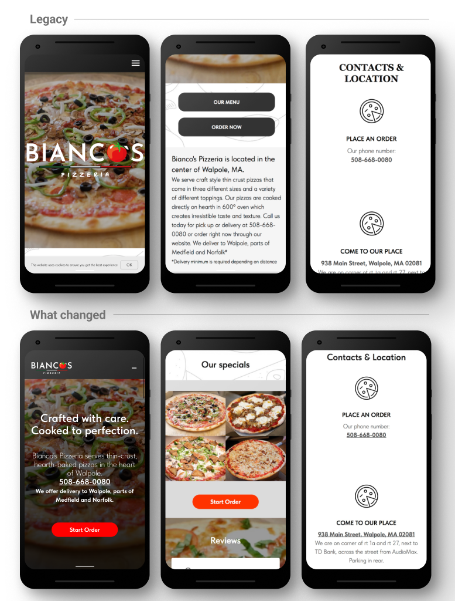

Bianco's Pizzeria
The ordering button ranked third on its own homepage. Behavioral data showed users reaching for the food menu first. That path had no exit to ordering. Redirecting that intent doubled the rate of visits ending with a click to the ordering platform.
More visits ending with a click to the ordering platform. Before: 1 in 4. After: nearly 1 in 2.
Before the redesign, 57% of ordering CTA taps went to a dead end. After: zero. Every tap on an ordering button now reaches Speedline.
The homepage had two equal CTAs. The food menu got twice the taps. That path had no exit to ordering.
Users weren't avoiding ordering. They wanted to see the food first. The fix wasn't removing the menu path. It was making both paths lead to Speedline.
Strong product, loyal customers, a website in the way
Bianco's is an independent, woman-owned thin-crust pizzeria in Walpole, MA. They run their own delivery drivers. It was a deliberate choice to stay off Uber Eats and DoorDash and protect their staff. The product is strong. The local reputation is strong. The problem wasn't awareness.
Most orders still came in by phone, creating operational load and removing visibility into customer behavior. 75% of sessions were on mobile. 65% arrived via Google search. Active intent, not casual browsing. A hungry parent on a weeknight doesn't need to be sold. They need one tap to ordering. The site gave them a fork in the road instead.
The engagement runs across three phases. Phase 1 (research and redesign) is complete. Phase 2 (validation and measurement) is in progress.
- Behavioral audit via Hotjar and Clarity
- Unmoderated user study (3 participants)
- Single CTA replacing competing buttons
- Click-to-call phone number
- Business info moved above the fold
- Cookie banner and chat widget removed
- Menu page redirected to Speedline (March 5)
- 30-day post-redirect data window open
- Tracking gap investigation underway
- CTA language comparison across three variants
- Post-redesign user test planned
- SEO and Google Business Profile optimization
- Brand story content strategy
- Social media and marketing calendar
- Platform evaluation (Tilda vs. purpose-built)
Users weren't avoiding ordering. They wanted to see the food first.
The homepage had two buttons side by side: OUR MENU and ORDER NOW. OUR MENU got nearly twice the taps: 19% of all site-wide clicks versus 10% for ORDER NOW. The mobile hamburger accounted for 27% of all taps. Open it, and the first option was the food menu. Two taps to the same dead end.
Session recordings added the explanation. Users tapped OUR MENU, landed on a wall of text with no photos and no way to order, scrolled, got stuck, and went back. The menu headers were underlined. They looked like links but weren't. The phone number was static text. Contact info sat below a fold most sessions never reached.


1,837 sessions landed and immediately returned to Google. That's not disinterest. That's a mismatch between what they expected and what they found.
The unmoderated user study confirmed the direction and added one finding the behavioral data couldn't surface: all three mentioned missing food photography without being prompted. Three strangers, one session each, same observation. When that happens it stops being an assumption. It's a finding.
The structural constraint
One constraint shapes every measurement decision in this project: conversion happens on Speedline, a third-party platform. The moment a user leaves the Bianco's website, all tracking stops. Whether they placed an order is invisible. That meant the goal wasn't more traffic. It was less friction on the path to a platform we couldn't instrument.
The approach followed the user. 69% of hamburger-first sessions ended at the menu tap — not because users were lost, but because they wanted to see what was on offer before committing. That is a reasonable, predictable behavior. The problem was where it led. Rather than redesigning the menu from scratch, the decision was to redirect that intent: anyone tapping Menu now lands on Speedline, which serves as both a browsable menu and an ordering system. Users who had been walking into a wall were picked up and placed directly into the flow they were looking for.
A consistent signal across both periods: roughly 1 in 5 mobile visitors navigates to the menu via the hamburger nav, regardless of what else changes on the page. That segment is not going away. It is a user need to serve better over time, not a problem to eliminate. Upcoming tests are designed with this in mind.
Every decision traceable to a specific finding
Same Tilda CMS, no platform rebuild. Each change is grounded in what the data showed.

| What changed | Why |
|---|---|
| Two equal CTAs → single "Start Order" | OUR MENU got twice the taps of ORDER NOW. Eliminating the split removes the dead-end path. "Start Order" over "Order Now." The phrasing implies browsing is welcome, not that you must commit immediately. |
| Phone number → click-to-call | Clarity recordings confirmed users tapping static phone text expecting a native dialer. Nothing happened. |
| Anonymous pizza grid → named, clickable specials | All three study participants independently cited missing food photography. Named items give first-time visitors a visual anchor before clicking through. |
| Business info → above the fold | Location, phone, and delivery area were hidden below a full-viewport hero with no scroll affordance. |
| CTA repeated mid-page | Scroll depth showed 50%+ of sessions reaching mid-page. The CTA needs to meet them there. |
| Cookie banner removed | No legal requirement for a US-only local audience. Removed friction and cleaned up data capture. |
| Chat-style bubble removed | 28 taps, almost all from confused users. Engagement from the wrong affordance is not positive engagement. |
| Food photos recommended for Speedline | At the start of the engagement, Speedline had no food photography — a long undifferentiated list with no visual hierarchy. Flagged to the owner as a friction point. The manager subsequently added photos to most menu items. Outside the website, inside the ordering experience. |
| Static menu page → redirected to Speedline | Session recordings showed users hitting dead ends across the static menu page: underlined headers that looked like links and did nothing, no path to ordering, no photos. The page absorbed traffic that had nowhere useful to go. Redirect completed March 5, 2026. |
Visits ending with a click to ordering nearly doubled
| What we measured | Before / After | |
|---|---|---|
| Visits ending with a click to ordering | 25%/41.5% | ↑ Nearly 1 in 2 |
| CTA taps landing on a dead end | 57%/0% | Eliminated |
| Share of all taps on the order button | 11.3%/33.3% | ↑ 3× |
| Users returning for a second visit | 13.1%/29.6% | ↑ Doubled |
| Hamburger nav dependency (mobile) | 30.9%/19.7% | ↓ 11pts |
| Taps on non-responsive elements | 19.2%/15.8% | ↓ Fewer dead ends |
| Frustrated repeated tapping | —/— | Pending verification |
| Users immediately returning to Google | 13.4%/9.5% | ↓ Fewer mismatches |
| Single-page visits | 27.3%/41.7% | Not abandonment The old site counted a menu tap as a second pageview — artificially lowering this number. A user who now lands, taps Start Order, and goes straight to Speedline completes in one page. The rise reflects the path working, not failing. |
Clarity, 100% session capture. January 6 – March 4, 2026.
Each next step held until there's enough data to act on it
| What | When / Status |
|---|---|
| Menu redirect evaluation | 30-day window closes April 5, 2026. Watching whether fewer sessions hit the old menu path and whether more visits end with a click to the ordering platform. |
| Google Business Profile menu card fix | After April 5. The GBP menu card currently routes through a Google search results page before reaching the site. Fixing it to point directly to Speedline removes a second dead end outside the website. |
| CTA language test | After April 5. Three labels currently in use across the site: "Start Order," "Order Now," and "Order." Will standardize to one label across all five buttons, run for 3-4 weeks, then rotate. Looking for language that captures both browsing and ordering intent — the 1 in 5 visitors who navigate to the menu first suggest the current phrasing may read as more commitment than browse. |
| Remove "Menu" from hamburger overlay | After CTA label test. Once button language explicitly signals that browsing and ordering happen in the same place, the overlay menu link becomes redundant. Catering and Contact Us remain. |
| Closing the tracking gap | Inquiry sent to the ordering platform. If it can receive tags from the website, it becomes possible to see which visits led to actual orders. That is the most important number in this project. |
| User testing, post-redesign | Planned: test the full path from homepage through Speedline ordering to surface remaining friction at the handoff. |
Longer term, there's a brand story that hasn't been told. Long-tenured kitchen staff. Their own delivery drivers. A deliberate choice not to join Uber Eats, made to protect livelihoods, not just margins. A content strategy rooted in that story, paired with SEO work and a marketing calendar, is the difference between a fixed website and a growing business.
The most important calls were interpretation calls
Understanding what the tap data actually meant was the work. Why more single-page visits signaled improvement, why the food menu needed to be treated as user intent before it could be treated as a design problem: those were interpretation calls, not design calls. Working within a free-tier toolset, a third-party platform that couldn't be modified, and incomplete conversion data: navigating that clearly is the skill.
This was also my first time working in Tilda CMS and using Hotjar and Clarity as analytics tools. The learning happened alongside the work.